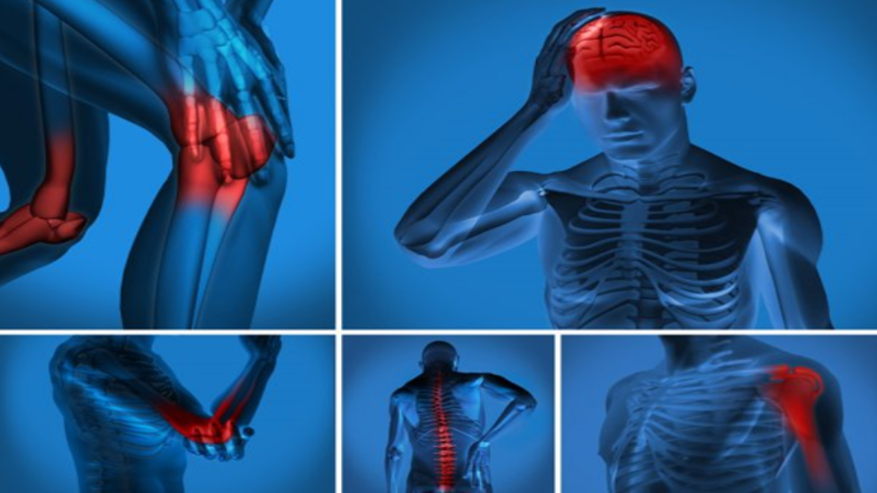

BODY PAIN

How is it caused?
The flu, the common cold, and other viral or bacterial infections can cause body aches. When such infections occur, the immune system sends white blood cells to fight off the infection. This can result in inflammation, which can leave the muscles in the body feeling achy and stiff.
How can I prevent it and cure it?
- resting the area of the body where you're experiencing aches and pains.
- taking an over-the-counter pain reliever, such as ibuprofen (Advil)
- applying ice to the affected area to help relieve pain and reduce inflammation.